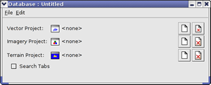
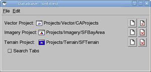

The following exercises guide you through defining and building a database, using the projects you created in the previous lesson.
When you define a database, you specify one or more Google Earth Enterprise Fusion projects that Google Earth Enterprise Fusion combines into a single self-contained world that is flyable in Google Earth EC. You can select up to three projects for a database--one of each type:
Because the majority of your efforts involve defining and configuring different projects for inclusion in your database, it is relatively fast to define a database once the projects are created. You simply select the projects that comprise the database and give it a name.
 The Database Editor appears with no projects selected.
The Database Editor appears with no projects selected.

ASSET_ROOT/Projects/Vector.
Note: The selection in the Type drop-down list near the bottom of this dialog determines the type of projects that appear on the list. Vector Project is automatically selected, so only vector resources appear on the list.
Projects/Imagery/SFBayArea.Projects/Terrain/SFTerrain.
All three projects are now listed in the Database Editor window:

ASSET_ROOT/Databases folder.The name of the database is displayed when you select the
/ASSET_ROOT/Databases folder in the asset navigation tree.
Once the database has been defined, it is ready to be built.
Note: If you had not built the projects included in this database previously, the following process would build them in the course of building the database. As you might expect, the database build process takes much longer if it is building all of the projects in the database at once. However, since Google Earth Enterprise Fusion gives you the option to build each project as soon as you finish making modifications or when you build the database, you can determine the best work style for yourself.
/ASSET_ROOT/Databases folder.
SFHighways appears on the right with the Current Version and the Current State set to None, indicating that the database has not yet been built.
The Version Properties dialog displays the most recent version of that database. You can expand the version tree to view the status of the build in real time by clicking the + signs.
When Google Earth Enterprise Fusion finishes building the database, its Current State column in the Asset Manager changes to Succeeded, and its Current Version column changes to the date and time the most recent build was started.
Close the Asset Manager by clicking the close box (X) in the top right corner, and go on to the next lesson.